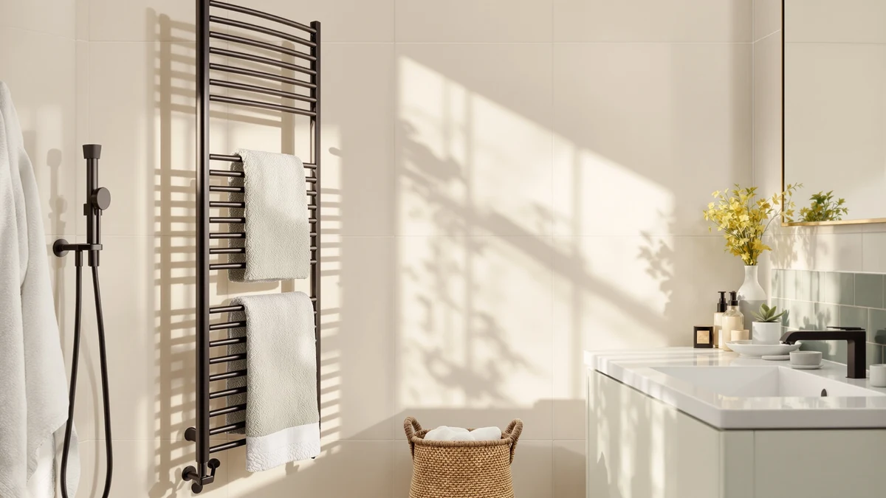

Best Freestanding Towel Warmer Drawers of 2026: 7 Top Picks
Prices and picks verified as of August 2026. Independent, reader-supported reviews.


Quick Answer
The best freestanding towel warmer drawers plug into a normal outlet and deliver hot towels without an electrician. After comparing seven units on capacity, timers, and safety, we recommend the Paruu 2-in-1 Towel Warmer at $109.99. It heats and dries, and its baby care mode runs gentle enough for infant clothes. No other unit in this guide comes close on safety.
Our pick: Paruu 2-in-1 Towel Warmer ($109.99) Check Price on Amazon
Bottom line: our top pick is the Paruu Towel Warmer for Bathroom at $134.99. The best budget option is the SereneLife Counter Towel Warmer Bucket - with Customized at $74.99.
Things to Know Before You Buy
- A freestanding towel warmer drawer runs off a standard 120V outlet. Built-in warming drawers need hardwiring, professional installation, and a much larger budget; see our hardwired towel warmer drawers guide if that is your project.
- Capacity decides who the unit suits. The compact SereneLife Counter holds one large towel, while the 20L VEVOR fits up to four oversized towels or a bathrobe.
- Check the timer options before you compare prices. The VEVOR and COSTWAY 23L schedule up to 24 hours ahead; the SereneLife Counter caps out at 60 minutes with no delay start.
- Look for a child lock and auto shut-off as a baseline. The Paruu adds a tip-over alarm that cuts power if the bucket falls over.
- These units warm dry, heat-resistant fabrics. None of them replaces a clothes dryer, and manufacturers tell you not to load wet items for heating.
The best freestanding towel warmer drawers fix a small daily misery: you step out of a hot shower and reach for a towel that feels like it came off a clothesline in November. Hotels and spas solved this decades ago with warming cabinets. At home, you have two paths. You can hardwire a built-in warming drawer into your vanity, which means an electrician, a renovation, and a four-figure bill. Or you can set a freestanding unit on the floor or counter, plug it in, and get the same warm towel for under $110.
We track 43 towel warmers in our product database across buckets, cabinet-style rectangles, and racks, and we have covered the category from every angle, including our wider roundup of the best freestanding towel warmers. For this guide we narrowed the field to seven plug-in units between $74.99 and $109.99 that hold at least one large towel, shut themselves off, and need zero installation.
The Paruu 2-in-1 Towel Warmer won the top spot. It heats at three temperatures, dries on a separate mode, adds a skin-safe baby care setting no rival here offers, and backs it all with the most complete safety package of the group. The SereneLife Counter Towel Warmer Bucket is our runner-up for small bathrooms. The five remaining picks include a 20L bucket for big households and a WiFi unit you can start from bed.
Why You Should Trust Us
I am Ilane Tall, and I run Best Towel Warmers. This site exists for one product category, which means we compare freestanding towel warmer drawers against dozens of direct rivals rather than against a grab bag of home gadgets. We maintain a database of 43 warmers in this category alone, log their prices and spec changes over time, and re-check that every model we recommend is in stock before this page goes live.
No manufacturer pays for placement in our guides, and none sees our rankings before you do. We earn a commission when you buy through our Amazon links, which keeps the site running and never changes which product wins. When a pick develops a pattern of owner complaints, we replace it and say why in The Competition section.
How We Picked
We started with the 43 towel warmers in our database and applied hard filters to find true freestanding towel warmer drawer candidates. First, the unit had to stand on its own on a floor or counter and run from a standard outlet, which removed every wall-mounted rack and hardwired drawer. Second, we cut accessories that pollute this search on Amazon, including fragrance disc refill packs that cost under $15 and warm nothing on their own.
From there, we required an automatic shut-off with no exceptions, a working timer, and capacity for at least one large bath towel. We gave extra weight to child locks, delay-start scheduling, and adjustable temperatures, because those three features separate a unit you use daily from one that ends up in a closet. We capped the field at $110; spending more buys WiFi radiators and luxury cabinets, which belong in our luxury towel warmer drawers guide. Seven finalists survived.
How We Compared
We ran the seven freestanding towel warmer drawer finalists through the same side-by-side comparison. We mapped every timer, delay option, and temperature setting into one sheet so gaps stood out immediately, such as the SereneLife Counter's 60-minute ceiling against the VEVOR's 24-hour scheduling. We checked each maker's stated heat-up figures against the category norm of 10 to 15 minutes and flagged claims that looked inflated.
We then measured listed footprints against a typical bathroom, because a 20L bucket that fits four towels helps nobody in a powder room with 2 square feet of free floor. Finally, we combed recent owner reviews for repeat failure patterns: lids that trap condensation, timers that drift. A single bad review costs a unit nothing; the same complaint appearing month after month costs it a spot in this guide.
Our Picks

Paruu 2-in-1 Towel Warmer
What we like
- Three heat levels (140/158/176°F) with five timers from 20 to 180 minutes
- Baby care mode caps temperatures at a skin-safe 104 to 140°F
- Separate drying mode with 1 to 5 hour timers
- Dual child lock, lid auto shut-off, and a tip-over alarm that cuts power
Flaws but not dealbreakers
- Highest price in this guide at $109.99
- Drying mode handles damp towels, not a dryer load; Paruu says to dry wet items before heating
- No WiFi or app control
| Material | — |
| Size | Fits 2 oversized towels |
The Paruu tops our list of the best freestanding towel warmer drawers because it covers situations the other six ignore. Standard mode gives you three temperatures, 140, 158, or 176 degrees Fahrenheit, across five timers running from 20 minutes to 3 hours, and the bucket heats from all sides so two oversized towels or a bathrobe warm through instead of staying cold at the center. Flip to baby care mode and the ceiling drops to a range of 104 to 140 degrees with shorter 15 to 60 minute timers, gentle enough for bibs, onesies, and washcloths. A drying mode with 1 to 5 hour timers rounds it out, keeping towels fresh between washes instead of damp and musty on a hook.
The safety package seals the win. You get a dual child lock on both the LED buttons and the lid, an automatic cutoff the moment the lid opens, a 1.38-inch insulated rim that stays touchable, and a tip-over alarm that beeps and kills power if the unit falls. The honest knocks: $109.99 makes it the most expensive pick here, Paruu tells you to dry soaked items before loading them, and there is no app. If phone scheduling matters more to you than baby mode, the SereneLife WIFI below costs $4 less. For everyone else, the Paruu is the freestanding towel warmer drawer we would put in our own bathroom.

SereneLife Counter Towel Warmer Bucket
What we like
- Counter-friendly 10.4 x 12 x 13 inch footprint
- 15/30/45/60-minute timer with auto shut-off
- Fragrance disc slot scents towels while they warm
- Cheapest pick in this guide at $74.99
Flaws but not dealbreakers
- Holds one large towel, so couples take turns
- No delay start for scheduling ahead
| Material | Stainless steel |
| Size | 10.4’’ x 12’’ x 13’’ -inches |
The SereneLife Counter is the freestanding towel warmer drawer for people who looked at a 20L bucket and thought, where would that even go. At 10.4 by 12 by 13 inches it sits on a vanity counter or a shelf, and at $74.99 it costs less than anything else we recommend. You load one large towel, a blanket, a bathrobe, or pajamas, pick 15, 30, 45, or 60 minutes on the touch controls, and the auto shut-off handles the rest. LED indicators show what the unit is doing at a glance, and a fragrance slot lets you scent the towel while it warms, a spa touch the bigger buckets in this price range skip.
The limits are built into the size. One towel at a time means a couple either shares a warming window or waits, and there is no delay function, so you start the cycle yourself 15 minutes before your shower rather than waking up to a warm towel. If either of those breaks your routine, spend $14 more on the VEVOR and its 24-hour scheduling. As a personal unit for one, the SereneLife Counter does the job in the smallest, cheapest package here.

VEVOR Towel Warmers for Bathroom
What we like
- Fits up to four oversized towels in its 20L body
- 24-hour delay timer schedules warming overnight
- 5-side heating warms from the walls and bottom, not one coil
- Child lock plus a red warning light above 140°F
Flaws but not dealbreakers
- 20L bucket claims real floor space in a small bathroom
- Plain utilitarian styling next to the rectangle units
| Material | Stainless steel |
| Size | 20L |
The VEVOR wins on raw numbers. Its 20L drum swallows up to four oversized towels, or a mix of blankets, bathrobes, and clothes, which makes it the freestanding towel warmer drawer to buy when the whole family showers within the same hour. Heat comes from five sides, walls plus bottom, so the towel at the center of the stack warms along with the one touching the wall. The 24-hour delay timer is the feature you end up using daily: load it at night, set it for 6:45 a.m., and step out of the shower to a warm towel without touching a button.
VEVOR aimed this at families with kids, and it shows. A child lock blocks curious fingers from the controls, and a U-shaped indicator glows red whenever the interior passes 140 degrees Fahrenheit, a clear stay-back signal that the other buckets here skip. The trade-offs are physical: a 20L cylinder needs a permanent patch of floor, and the plain white bucket looks more like utility equipment than furniture. At $88.90 it undercuts the Paruu by $21 while carrying twice the towels; it loses the top spot only because it heats at one intensity and offers no drying or baby-specific mode.

COSTWAY Towel Warmer for Bathroom
What we like
- Reaches 266°F in 15 minutes, among the fastest here
- 21L capacity fits two oversized 45 x 70 inch towels
- Flip-top lid with a built-in handle opens one-handed
- Child safety lock and 1-hour auto shut-off
Flaws but not dealbreakers
- Single button means no timer choices and no delay start
- Costs $10 more than the COSTWAY 23L, which adds a display and scheduling
| Material | Stainless steel |
| Size | 13" x 18.5" |
The 21L COSTWAY takes the appliance approach to the freestanding towel warmer drawer: one button, one job. Press it and the galvanized-lined drum climbs to 266 degrees Fahrenheit within 15 minutes, warming two oversized 45 by 70 inch towels, a blanket, or a robe from the inside out. The flip-top lid has a molded handle, so you open it one-handed with a towel over your arm, and a fragrance holder inside the lid scents the load. After an hour it shuts itself off, and a child lock keeps small hands off the control.
Simplicity cuts both ways. There is no display and no delay start, so you cannot schedule tomorrow's towel from tonight. The measuring stick is its own sibling: the COSTWAY 23L below carries more capacity, an LED display, three timer lengths, and 24-hour scheduling for $10 less, which is why the 23L wears our budget badge and this one settles for a specific audience. Buy the 21L if a parent or guest will use it and you want operation to be press-and-done, nothing more.

COSTWAY 23L Towel Warmer Bucket
What we like
- 23L capacity, the largest in this guide, holds two full-size towels
- LED display with 20/40/60-minute timers and up to 24-hour delay
- Child lock, overheat protection, and a fragrance holder
- $79.99 price beats the smaller 21L COSTWAY by $10
Flaws but not dealbreakers
- Heats up to 275°F, so keep delicate fabrics on shorter cycles
- No app or remote control at any distance
| Material | Stainless steel |
| Size | — |
Rank the seven picks by spec-per-dollar and the COSTWAY 23L wins without much argument, which is exactly what you want from a budget freestanding towel warmer drawer. For $79.99 you get the largest drum in this guide at 23 liters, enough for two full-size bath towels, a personal blanket, or a stack of smaller items warmed together. The control panel gives you a real LED display with labeled buttons, timers of 20, 40, or 60 minutes, and a delay function that stretches to 24 hours, matching the VEVOR's headline scheduling trick at a lower price. A child lock, overheat protection, and a fragrance holder complete a feature list that reads like the $100-plus units.
Two cautions keep it out of the top slot. Peak heat reaches 275 degrees Fahrenheit, the highest figure here, which suits thick cotton towels but argues for shorter cycles on anything delicate. And control stops at the panel itself; there is no app, so the scheduling you get is the scheduling you set standing in the bathroom. Neither issue changes the math. If you want the most warmer for the least money, this is the pick.

Keenray Towel Warmer Bucket Luxury
What we like
- Heats towels to temperature in about 10 minutes
- Rectangle cabinet shape looks closest to a true drawer
- 30/60/90/120-minute timers plus a 10-hour delay start
- Sliding child lock and a fragrance option
Flaws but not dealbreakers
- 10-hour delay trails the 24-hour scheduling on the VEVOR and COSTWAY 23L
- No app control or display refinements
| Material | Stainless steel |
| Size | Large |
If you searched for freestanding towel warmer drawers because you pictured a piece of furniture rather than a bucket, the Keenray is your pick. Its rectangle cabinet body reads as intentional in a finished bathroom, and it holds two large towels, a blanket, or a bathrobe behind that cleaner silhouette. Speed is its other card: the heating elements bring towels to a comfortable temperature in about 10 minutes, the fastest claim among our seven, and a circulation system moves that heat through the folds so the inside of the stack matches the outside.
The controls cover the essentials well. You choose 30, 60, 90, or 120 minutes with auto shut-off at the end, and a delay start reaches up to 10 hours ahead, enough to load at midnight for a 7 a.m. shower, though short of the full 24-hour windows on the VEVOR and COSTWAY 23L. A sliding child lock secures the lid against curious kids, and a fragrance option scents the load. At $79.99 it ties the COSTWAY 23L on price, so the choice between them comes down to shape and speed versus capacity and a longer delay window.

SereneLife WIFI Luxury Rectangle Towel
What we like
- WiFi app control schedules on and off times from anywhere
- Fits two large towels or a throw blanket
- Double-walled insulated lid stays cool to the touch
- Auto shut-off backs up whatever you forget
Flaws but not dealbreakers
- The headline feature depends on WiFi setup and the companion app
- Second-highest price here at $105.99
| Material | Stainless steel |
| Size | — |
The SereneLife WIFI is the only freestanding towel warmer drawer in this guide you can run without walking to it. Connect it to your home network and the app handles on and off schedules from your phone: set a weekday routine from bed, or start it from the car so a warm towel meets you at the door. The rectangle cabinet body holds two large bath towels or a throw blanket, and the double-walled lid keeps heat inside while staying cool enough to touch, a detail that matters with kids in the house. An auto shut-off catches anything you forget to end.
The knocks follow from the concept. If your bathroom WiFi signal is weak, or you never install the app, you have paid $105.99 for scheduling the COSTWAY 23L does onboard for $26 less. And the Paruu, $4 more, trades the app for baby mode, drying, and a tip-over alarm, which is the better deal for most families. Choose the SereneLife WIFI when remote control is the feature you will actually use, week in and week out.
Quick Comparison
| Product | Material | Price | Rating | Best for | Get it |
|---|---|---|---|---|---|
| Paruu 2-in-1 Towel Warmer | — | $109.99 | 4 | Families, the top pick overall | View on Amazon → |
| SereneLife Counter Towel Warmer Bucket | Stainless steel | $74.99 | 4 | Small counters, one towel at a time | View on Amazon → |
| VEVOR Towel Warmers for Bathroom | Stainless steel | $88.90 | 4 | Up to four towels, 24h delay | View on Amazon → |
| COSTWAY Towel Warmer for Bathroom | Stainless steel | $89.99 | 4 | One-button simplicity | View on Amazon → |
| COSTWAY 23L Towel Warmer Bucket | Stainless steel | $79.99 | 4 | Best value, largest capacity | View on Amazon → |
| Keenray Towel Warmer Bucket Luxury | Stainless steel | $79.99 | 4 | Drawer looks, 10-minute heat | View on Amazon → |
| SereneLife WIFI Luxury Rectangle Towel | Stainless steel | $105.99 | 4 | App scheduling from anywhere | View on Amazon → |
Are the best freestanding towel warmer drawers actually drawers?
Most are not drawers in the kitchen-appliance sense.
How long does a freestanding towel warmer take to heat towels?
Plan on 10 to 15 minutes for most units.
The Competition
Search Amazon for freestanding towel warmer drawers and the results include products that warm nothing at all. Fragrance disc refill packs from YLJMFH, Demissle, and SereneLife sell for $6.98 to $13.99 and show up alongside actual warmers, but they are scent accessories for buckets you already own; we cut them on sight. We also excluded every wall-mounted rack, including the rotating ENZE models and the Aquatrend folding rack, because bolting to a wall disqualifies a unit from this guide by definition. Our freestanding vs wall-mounted comparison covers that choice if you are still deciding between formats.
Among true freestanding rivals, the ZAFRO at $42.43 came closest to a spot. Its three temperature levels, LED display, and 24-hour delay match our picks at nearly half the price, but the listing is newer than our recommended lines from COSTWAY, SereneLife, and Keenray, and we want a longer owner track record before sending readers there. The Sweetcrispy 20L at $44.99 sits in the same wait-and-see bucket. The Lagute at $71.99 advertises 60-second heating and WiFi, yet its timers stop at 50 minutes, the shortest maximum of anything we evaluated. The Di'Aroma 26L at $99.99 offers the largest tub we found, but at that price the Paruu adds baby mode, drying, and tip-over protection for $10 more.
None of these alternatives changed the ranking. For most bathrooms, the best freestanding towel warmer drawers purchase remains the Paruu 2-in-1 at $109.99: no rival under $110 matches its adjustable heat and family-safe modes.